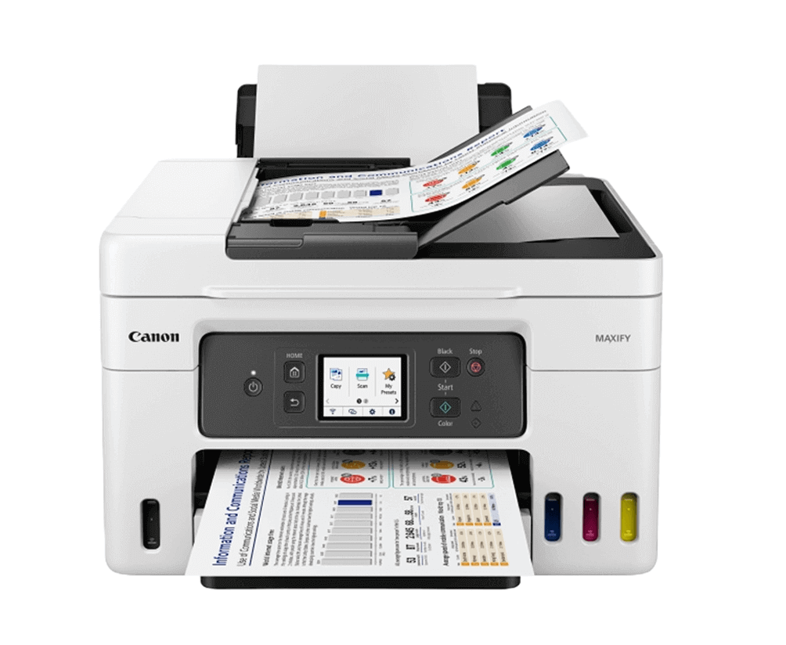
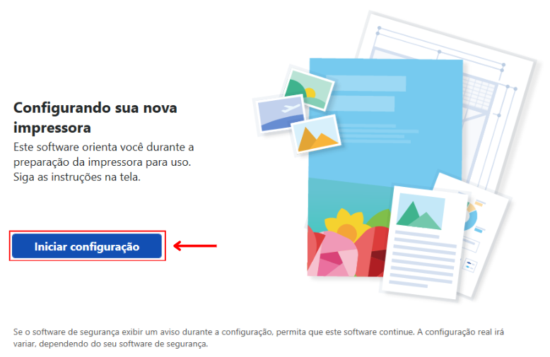
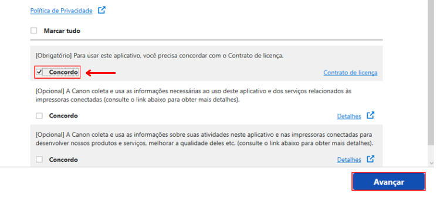
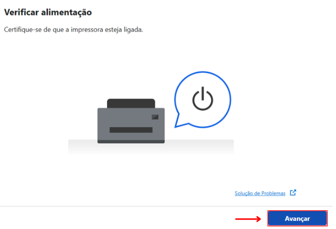
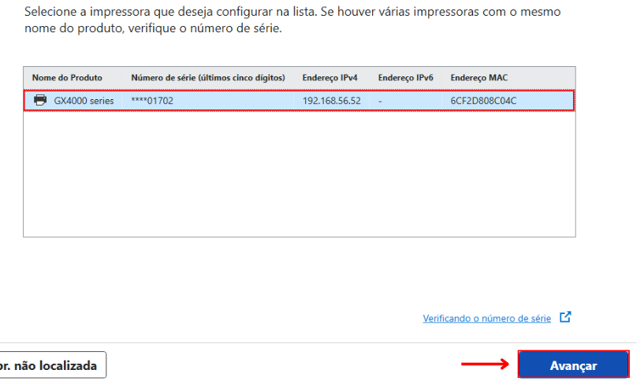
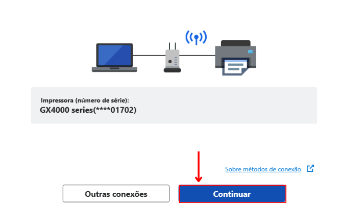
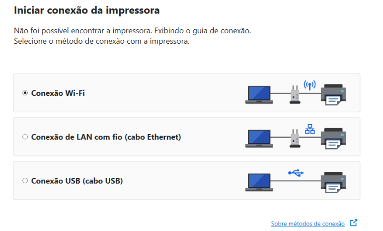
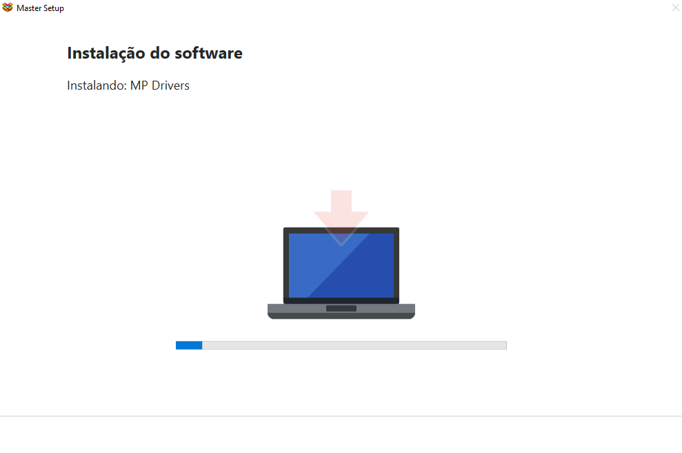
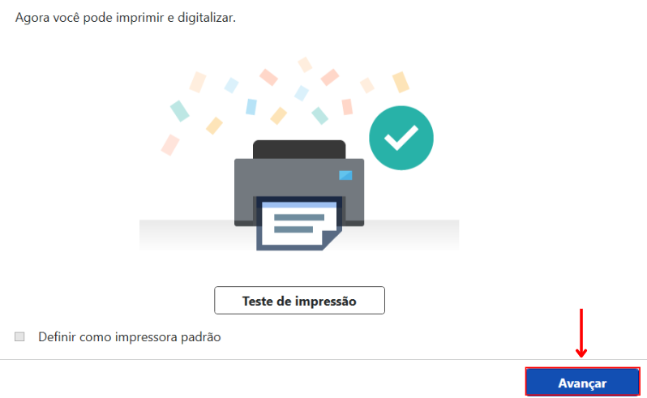
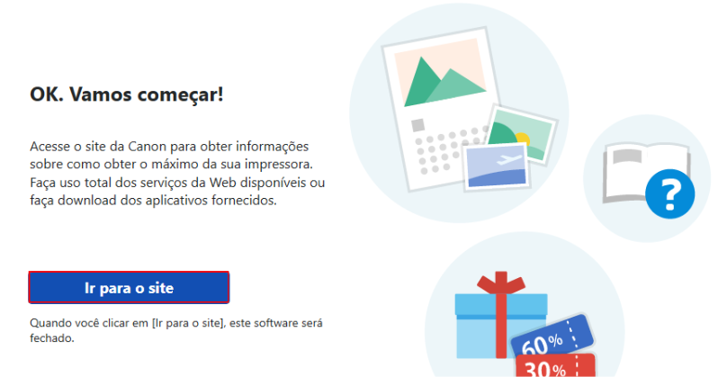

Canon GX4010
Siga este guia para instalar a impressora nos computadores da escola.
Iniciar Configuração
Após extrair e abrir o arquivo baixado, clique no botão Iniciar configuração na tela principal.

Contrato e Licença
O instalador pedirá que você aceite os termos de uso. Marque a caixa "Concordo" na primeira opção (Obrigatório) e clique em Avançar.

Verificar Alimentação
Certifique-se de que a impressora já está ligada. O sistema fará uma varredura (Pesquisando impressoras). Clique em Avançar.

Selecionar a Impressora
A impressora GX4000 series aparecerá na lista. Clique sobre ela para selecioná-la e depois em Avançar. Na tela seguinte, apenas confirme clicando em Continuar.


Método de Conexão
Se o sistema não encontrar a impressora, ela provavelmente não está conectada ao Wi-Fi da Escola.

Instalação dos Drivers
Agora é só aguardar. O programa fará o download e a instalação dos "MP Drivers" automaticamente. Não cancele o processo.

Conclusão
Pronto! A mensagem "Agora você pode imprimir e digitalizar" vai aparecer. Você pode clicar em "Teste de impressão" se quiser garantir, e depois em Avançar.
Na última tela, basta clicar em Ir para o site para fechar o instalador.

